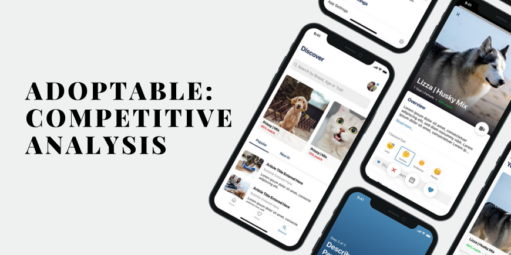

BLOG 5: Competitive Analysis of Adoptable: Building a Local Foundation with Global Aspirations
Adoptable, a startup focused on improving pet adoption in the Philippines, aims to build a strong local foundation through community engagement, shelter partnerships, and a user-friendly platform. With success, the vision is to expand nationally and internationally. This competitive analysis highlights Adoptable’s strengths and competitive position as it strives for both local impact and global growth.
Primary Competitors
- Petfinder (International):
- Features: Nationwide database of adoptable pets, easy-to-use search filters.
- Weakness: It might be less focused on specific locations like the Philippines, leading to less localized listings.
- Strengths: High brand recognition, large database of pets.
- Adopt A Pet (International):
- Features: Offers an adoption search tool that includes pets from shelters and individual owners.
- Weakness: Not very localized in the Philippines, might not cater specifically to smaller communities.
- Strengths: Large user base, extensive reach across multiple regions.
- Local Shelters and Rescuers:
- Features: Most shelters and rescuers have Facebook pages or websites with listings for adoptable pets, which are shared within local communities.
- Weakness: Lack of a centralized platform for adoption, making it harder for potential adopters to find all available pets in one place.
- Strengths: Close connection with the community, personalized and direct communication with adopters.
- Facebook Groups/Marketplace:
- Features: Highly popular for pet adoption, with ease of access to community-driven listings.
- Weakness: Lack of formal structure, which can result in unreliable or unverified listings. No standardized process for adoption.
- Strengths: Large user base, very local and active community. Free to use.
Market Positioning
- Adoptable:
- Positioning: A niche platform targeting the Philippines, offering a comprehensive solution for both shelters and individual users to post and adopt pets.
- Competitive Advantage: Focused on local adoption with additional features such as shelter partnerships, ease of use, and people-to-people adoption.
- Competitors:
- Petfinder and Adopt A Pet: These platforms are well-established with broad reach, but may not offer as specialized or localized service in smaller countries like the Philippines.
- Local Shelters: Positioned as community-driven, but lack the technology to scale or offer an app-like experience.
- Facebook Groups/Marketplace: Positioned as informal and community-driven, offering quick, no-cost access but lacking trustworthiness and formal processes.